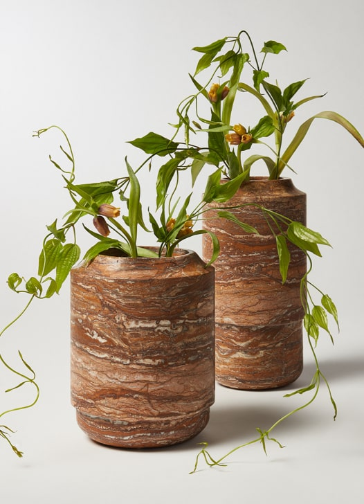

apol
hadr

Art objects
New York, NY
Existing between the
boundaries of nature and culture,
Matthew’s work conveys an evocative
nostalgia through the use of historically
revered natural materials. His work
ranges from unique art objects to
editioned productions and celebrates
the union between heritage, natural
materials, and refined craftsmanship.